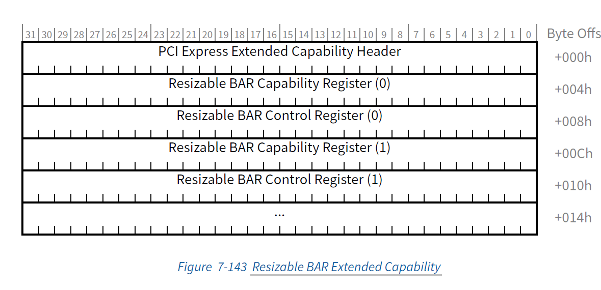
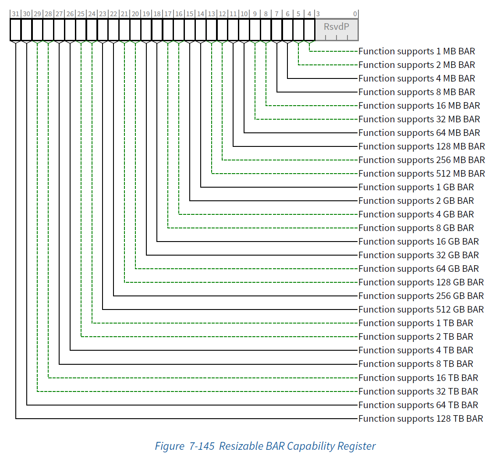
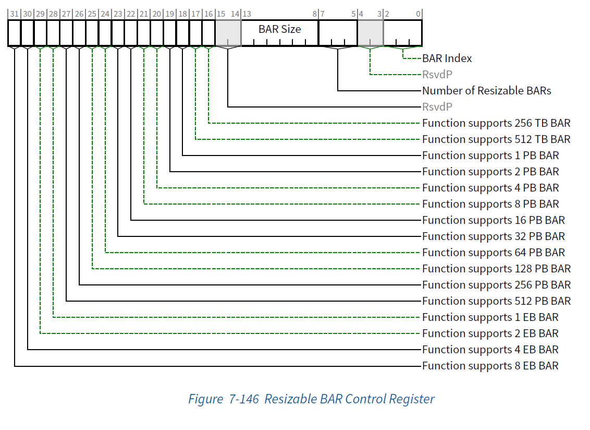
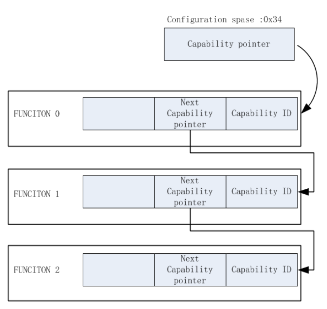

Resizable BAR 功能
传统BAR的大小是固定的，PCI枚举器通过写入0xFFFFFFFFF到里面，然后读出来，mask掉最后的几个特殊位，从而知道该窗口有多大。这个Size是设备最小需要的，是固定写死的，没有任何商量的余地。PCI枚举器必须满足，否则该设备将不能正常工作。
Resizable BAR也是一种BAR，不过这种BAR并不是Fixed的，而是可以变大小的。通过协议规定的方式，让PCIe host可以根据实际地址空间分配情况动态设定一个设备和CPU配置空间都可以接受的大小。(可以协商，最多6个BAR，单个BAR 最高支持8EB)
近些年，主要是一些显卡会有这个需求，显卡的显存比较大，需要的BAR 比较大。
PCIe 5.0 Spec Chapter 7.8.6 Resizable BAR Extended Capability 介绍了Resizable BAR相关内容。其Extended Capability ID number is 0x15。



Bus 01,Device 00,Function 00 - NVIDIA Corporation GA104M [Geforce RTX 3070 Ti Laptop GPU](PCI-Express Gen4@Gen4 x16@x8) ...... BAR0 0xFB000000 - 0xFBFFFFFF (Size=16MB,16MB aligned,32bit memory space) BAR1 0x0000007C00000000 - 0x0000007DFFFFFFFF (Size=8GB,16GB aligned,64bit memory space,prefetchable) BAR3 0x0000007E00000000 - 0x0000007E01FFFFFF (Size=32MB,8GB aligned,64bit memory space,prefetchable) ...... ---- PCI Capability List ---- ...... ---- PCI Express Extended Capability List ---- ...... PCI Express Extended Capability #8 Caps Class 0x15 - Resizable BAR Caps Offset 0xBB0 BAR0 Size 16MB (Support: 16MB ) BAR1 Size 8GB (Support: 64MB 128MB 256MB 512MB 1024MB 2GB 4GB 8GB ) BAR3 Size 32MB (Support: 32MB ) ...... PCI registers Offset[0x000] DE 10 E0 24 06 00 10 00 A1 00 00 03 10 00 80 00 ...$............ Offset[0x010] 00 00 00 FB 0C 00 00 00 7C 00 00 00 0C 00 00 00 ........|....... Offset[0x020] 7E 00 00 00 01 00 00 00 00 00 00 00 DE 10 E0 24 ~............... ...... Offset[0xBB0] 15 00 C1 C1 00 01 00 00 60 04 00 00 00 FC 03 00 ........`....... Offset[0xBC0] 01 0D 00 00 00 02 00 00 03 05 00 00 10 00 41 C1 ..............A. Offset[0xBD0] 06 00 00 00 00 00 00 00 10 00 10 00 00 00 00 00 ................ Offset[0xBE0] 04 00 01 00 00 00 E0 24 73 05 00 00 01 00 00 00 .......$s....... Offset[0xBF0] 00 00 00 00 0C 00 00 00 00 00 00 00 0C 00 00 00 ................ Offset[0xC00] 00 00 00 00 00 00 00 00 00 00 00 00 00 00 00 00 ................ ......
Enhanced Allocation Capability

相关的寄存器
7.5.3.2 PCI Express Capabilities Register (Offset 02h) - Slot Implemented
7.5.3.6 Link Capabilities Register (Offset 0Ch) - Surprise Down Error Reporting Capable
Data Link Layer Link Active Reporting Capable
7.5.3.9 Slot Capabilities Register (Offset 14h)
Resources
Intel新上市Arc显卡要求的Resizable BAR是什么？ - 知乎 (zhihu.com)
https://patchew.org/EDK2/20230511081011.2692963-1-minhnguyen1@os.amperecomputing.com/
https://blog.csdn.net/weixin_43405280/article/details/131641188?spm=1001.2101.3001.6650.1&utm_medium=distribute.pc_relevant.none-task-blog-2%7Edefault%7ECTRLIST%7ERate-1-131641188-blog-52870727.235%5Ev38%5Epc_relevant_anti_vip&depth_1-utm_source=distribute.pc_relevant.none-task-blog-2%7Edefault%7ECTRLIST%7ERate-1-131641188-blog-52870727.235%5Ev38%5Epc_relevant_anti_vip&utm_relevant_index=2
http://blog.chinaaet.com/justlxy/p/5100053251
http://blog.chinaaet.com/justlxy/p/5100057851
https://blog.csdn.net/MissMango0820/article/details/128497422